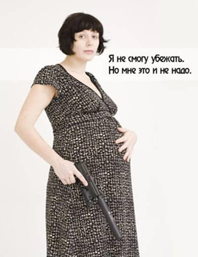

Прогибиционисты как они есть
|
Не пытайтесь, детки, дохтура лечить, сие только усугубит ваш диагноз... |
Для лучшего понимания менталитета прогибиционистов приведу характерные для них высказывания. Много, предупреждаю сразу — оно и смешно, и грустно, и показывает, что явление распространенное.
Если кто-либо хочет заявить, что-де я занимаюсь манипуляцией, пытаясь выставить прогибиционистов дураками, то отвечу. Во-первых — да, манипуляция. Я сейчас подробненько и в красках распишу альтернативное мышление этой категории населения, потому что народ должен знать своих героев. Пусть не лично, но как класс. Во-вторых, если кто знает, где есть разумный прогибиционист — напишите мне, пожалуйста. Не первый год интересуюсь темой легалайза, но ни разу такого не встречал. Умненькие, умеющие жонглировать статистикой, с умелым пафосом заниматься демагогией и так далее — попадаются. Вполне адекватные в других областях люди — бывают, но по странной закономерности адекватность улетучивается, как только произносится слово «легалайз».
Примечание: да, это тоже манипуляция. И то, что я откровенно говорю о манипуляции — опять же манипуляция (мол, раз предупрежден, то не сработает — фиг там, все равно сработает). Приятного чтения.
Кстати: ежели кто напишет, что-де Варракс сам признался, что его разбор манипулятивен и предвзят, и по этой причине его и читать незачем, то это будет именно то, что в интернете называется «слив засчитан». Предвзятость позиции вовсе не обозначает нечестность и/или некорректность аргументации — но понять это в состоянии немногие (ага, опять манипуляция).
Начнем, пожалуй, с форума на сайте Оперуполномоченного Гоблина www.oper.ru. Итак, перед вами — тупичковая ветвь развития во всей своей красе.
Dims0n
«Идея продавать короткоствол — это очередное отвлечение внимания населения от таких насущных вещей, как уровень зарплат, пенсий, социального обеспечения и здравоохранения.
Это спущенная в массы мечта для идиотов — куплю ствол и все меня будут боятся и уважать. Куплю ствол — и вся преступность исчезнет сама собой а злые гопники будут зверски расстреляны.
На самом деле — оружие нужно на войне. В мирной жизни — достаточно кулаков, бейсбольной биты, ну на крайний случай — травматической “Осы”.
Умные люди как жили так и будут жить без проблем и подростковых комплексов о “большой страшной пушке”.
С одной стороны, было бы приятно завести личный пистолет, хранить его дома в сейфе, иногда ездить с ним в тир стрелять.. А надо ли это??
Стрелять в тире можно и с хранящихся там стволов, уровень ответственности ниже, а безопасность выше. Возить же без охраны свой собственный ствол — это не самое приятное занятие.
Мысль носить заряженный ствол по улице в расчете на применение — это детство в жопе играет.
Даже полному демократу должно быть понятно, что ни один суд не оправдает человека, застрелившего безоружных людей — нападали они или нет, это никто никогда никому не докажет.»
Честно говоря, уже по этому посту можно писать если не кандидатскую, то дипломную работу по психопатологоанатомии. Но это требует времени, так что ограничусь отдельными замечаниями.
Очень характерна демагогия вида «если важно А, то совсем не важно Б». Давайте установим Самую Главную Проблему, а остальные не будем решать, а? Все просто: смена тезиса — демагогия. Уровень зарплат и так далее — это совсем другой вопрос.
«Как вы можете говорить о легализации короткоствольного оружия, если шесть мегаевреев сгорели в неиллюзорных топках холокоста?» — так передергивание еще более наглядно.
Далее идет смесь проекций «меня будут все уважать», «детство в жопе» и т.п. Открою секрет: те, кто себя уважает, причем — именно уважает, а не страдает от избытка Чувства Собственной Важности, как-то мало обращает внимания на всех подряд, уважают они его или нет. Это я толсто намекаю на то, что помыслить «и тогда станут уважать» может лишь тот, кого сейчас уважают как-то не очень. Или совсем не. Как бы он не пыжился, изображая из себя взрослого человека, который тщательно выковырял свое детство из своей жопы.
И вообще — интересно, а откуда окружающие будут знать, что есть ствол? Ходить, им размахивая? Зверски расстреливая гопников при том? Делирий потихоньку начинается, так сказать…
Далее вообще цирк: пациент, как понимаю, предлагает носить с собой бейсбольную биту. Или надеяться на кулаки — всем, включая инвалидов, стариков и беременных женщин. Без комментариев.
Тезис про то, что собственный ствол надо носить под охраной — впечатлил. До этого не каждый прогибиционист додумается. А шикарный аргумент, в самом деле — если у вас есть средство самообороны, то вам всенепременно нужно нанимать охрану, а то неприятно. А без средства самообороны — охрана на фиг не сдалась, видимо. Да и если нужна была ранее, то короткоствол лишь увеличивает потребность в охране. Альтернативная логика, понимаете ли…
Обратите внимание на ссылку про суд и все такое — я не про явную ложь (никакой и никогда), а про саму позицию. Позже обсудим.
razoom1
«Поражают размышления на тему “ствол — сдерживающий фактор”. Кого сдерживающий? Вы хоть раз видели разбой в подворотне? Зашел и тут же сзади по башке палкой шибанули. совет: носите КС стволом воткнув в жопу, что бы наиболее опасная для вас категория нападающих четко видела что КС у вас есть. Лежишь без сознания, твой КС преступники обнаружат, когда тело будут обыскивать. Кого вы короткостволом собираетесь пугать: гопников просящих закурить? Да половина из них после резкого “пошел на хуй” отвалит. Вторая половина сбежит от громкого крика “милиция!” а третья половина может и в глаз конечно дать, когда у тебя нет КС, что интересно на расстоянии вытянутой руки они в глаз все равно дадут быстрее чем КС будет извлечен. Те кто вас будут грабить и убивать не спонтанно — вас ограбят и убьют, и ваш КС им никоим образом не помешает. А грозить шпане стволом — суть уголовщина. Потому как даже если они и хотели тряхануть с тебя полтинник на пиво, то твой случайный выстрел потом никто оправдывать не будет. Сядешь как и многие другие идиоты.»
Опять: «Ой, уголовщина! Ой, суд будет!».
Но в этом посте наиболее показательно другое: все преподносится исключительно с точки зрения «меня, любимого, начали обижать в упор с разбегу». Я даже не про то, что из КС, в отличие от резинострела, можно стрелять прямо из кармана, а про то, что автору поста идея «помочь другому, если его грабят и т.д.», даже не приходит в голову. А ведь, если ситуация понятна со стороны, то извлечь ствол, прицелиться и все такое — времени хватит.
Это сейчас преступник может, скажем, выхватить сумочку или барсетку и побежать (скрыться на авто). А если он будет знать, что есть вероятность нарваться на пулю, причем не только от жертвы, а от прохожего, который все видел — то желающих будет поменьше.
Балбес
Вопрос всем сторонникам КС.
«Почему-то, в своих посланиях, вы исходите из того постулата, что только у вас будет КС, а у остальных КС не будет. Ну так, попробуйте осознать, что в случае официального разрешения продажи, ношения и применения КС, упомянутые ваши “сферические гопники” тоже будут вооружаться. Кто официально купит КС, поскольку по данным МВД он белый, пушистый и вообще сын достойных родителей, а гопником является только в ваших глазах. А те, кто, как говорилось раньше “из трудных семей”, вполне могут вооружаться за счет маменькиных сынков, у которых будут отнимать упомянутые КС и черного рынка (на котором цены на “паленые стволы” и сейчас небольшие, а уж тогда и вовсе упадут). Подумайте о том, что вам, таким смелым и уверенным в себе, благодаря наличию КС в кармане, будет противостоять группа отмороженных на голову стайных особей, каждый из которых (или большая часть) будут вооружены КС и не колеблясь его применят в отношении вас. Каковы будут в этой ситуации ваши действия и развитие событий с вашей точки зрения?»
Вот что я особенно люблю — так это использование тезисов одновременно и с измышлизмом, и с квантором общности. Сколько знаю сторонников легалайза — так как раз никто не исходит из «только у вас будет КС, а у остальных КС не будет»…
А далее достаточно посмотреть статистику — какой процент преступлений совершается с зарегистрированным оружием, а какой — с незарегистрированным. Или просто включить мозги и понять, что пользоваться для совершения преступления зарегистрированным оружием — это практически то же самое, что оставлять отпечатки пальцев. Да и статья за хулиганство подразумевает несколько другое наказание, чем за вооруженное ограбление (разбой) и т.п. — не стоит думать, что те, кто желает «попросить закурить», всенепременно хотят пострелять по жертве.
Кстати, по данным МВД, в 1991 году в единой учетной базе на территории СССР числилась 951 единица оружия, а на сегодняшний день только в РФ эта цифра превышает 215 тыс. У преступников на своем рынке оружия, как видите, предостаточно.
Обратите заодно внимание на повторение мотива «Ой, шо будет! Это ж в меня выстрелить могут!». Причем рассуждение идет только в одну сторону: «я — жертва». То, что преступник оказывается в тех же условиях (и вряд ли желает получить пулю), в расчет не принимается. Что характерно.
lex-kravetski
«Интересно, откуда берется уверенность, что законы, относящиеся к выдаче разрешений на пистолеты населению, будут строго и неуклонно соблюдаться? Неоднократно уже читал рассуждения подобного рода, типа, долгие изнуряющие тренировки до и после приобретения пистолета, проверки во всех возможных диспансерах, какие-то там аттестации, ремонты и остальное благолепие. Ну да, если бы бумажка, выпущенная в свет депутатами, сразу же радикально меняла положение вещей, то все было бы отлично. Самые честные, ответственные и бесстрашные члены общества были бы вдобавок вооружены и по дороге на работу причиняли бы защиту угнетенным и осуществляли бы воспитание гопоты. Однако кто не слеп, видит, что на права у нас положено сдавать. С предварительными тренировками и инструктажами на тему техники безопасности. При этом адское количество отморозков катается под 150 км/ч не только по проспектам, но и во дворах, свободно проезжает на красный свет и давит ни в чем не повинных пешеходов. Ситуация строго аналогичная.
С чего вдруг тогда с пистолетами все будет иначе? Да так же будет. Права на владение и даже на ношение будут покупать у знакомых милиционеров и у незнакомых тоже. На тренировках и тренеры и тренируемые (если им вдруг денег на покупку прав не хватит и они на тренировку придут) увидят процесс тренировки в гробу. Явился и ладно. И так молодец. Главное деньги плати. Поэтому всякие там условия имеют смысл, когда в государстве уже и так все хорошо работает. Иначе и пьяные с пистолетами будут встречаться и гопота — папе лень в сейф было пистолет класть, а сыночек взял поиграться. И в бытовых ссорах будут друг в друга шмалять, и просто по пьяни, а вмешательство в чужую драку для ее предотвращения все равно будет исчезающе редким явлением. Блин, в СССР даже без ножа многие разнимать лезли, а сейчас никто и с базукой не станет.»
Типично интеллигентская точка зрения. Автор, очевидно, не сталкивался с уже существующей практикой получения нарезного оружия. Которая работает не первый год, и как-то не приходилось слышать, чтобы срок в пять лет от приобретения гладкоствольного оружия сокращали за деньги или по знакомству. Но интеллигентов интересуют не факты, а идея и возможность потрепаться.
Кстати говоря, про «в СССР даже без ножа многие разнимать лезли» — очень верно подмечено. Но это — аргумент «за», а не «против»! Все просто: в СССР было как-то не принято ходить с ножом, и лезть разнимать можно было вполне.
Теперь же нарваться на нож — без проблем. Кроме того, сейчас драки в основном происходят не в виде «один на один», а «несколько на одного». Так что вступаться имеет смысл именно что с короткостволом, который уравнивает как физические данные, так и численное преимущество.
Ursa
«Я против легализации КС по одной простой причине: даже если КС получат несколько малолетних идиотов, из особо желающих, и хоть один из них случайно (или намеренно) убьет нормального человека (не гопа, не бандита и не такого же дебила) — это плохо. Я не российская демократия. И мне жалко каждого бессмысленно пострадавшего человека.
Дело в том, что потенциальные защитники справедливости:
1. Видят легализацию так: пришел в магазин, отслюнил несколько купюр за понравившийся КС, положил в карман штанов — ушел.
2. Считают, что, поскольку КС имеет небольшие габариты, он чрезвычайно легок, и его можно положить в карман куртки так, что он не будет мешать.
3. Считают, что КС можно в любой момент ловко выхватить из кармана куртки и тем самым обратить хулиганов в бегство. Гладкоствольное же оружие заметит всякий, поэтому хулиганы просто испуганно пройдут мимо и не дадут проявить героизм.
4. Видели, как в американском кино героев постоянно жрут и бьют как раз в момент перезарядки, например, двухстволки.
5. Считают, что из КС в хулигана может попасть любой и с любого расстояния.
6. Считают себя просветленными, свободными от всех человеческих пороков. Соответственно считают, что им мгновенно выдадут все справки и разрешения.
7. Считают что газовые баллончики, электрошокеры и травматика — оружие для детей, у настоящего мужчины обязательно должен быть СТВОЛ!
8. Иногда имеют деньги не только на покупку КС, но и на дачу взятки с целью получения фиктивной справки.
9. Знают о коррумпированности чиновников. К сожалению, этого в демократической России хватает.
10. Все же потаскают купленный и оформленный папой/братом/лично КС с собой. Если не убьют/не покалечат в первые дни — притомятся и положат на полку (врядли в сейф, доставать долго, а они всегда начеку)
11. Возьмут КС на вечерне-ночную пьянку — мало ли что.»
Потрясающая логика: «Пусть хоть всех поубивают — лишь бы не было войны». Если некто из нормальных людей случайно погибнет от выстрела — это весомая причина для запрета КС. А то, что легализация КС позволить предотвратить ряд преступлений, включая те, которые повлекут смерть пострадавших, — это без разницы. Лучше пусть пострадает множество невиновных, чем хоть один именно от КС.
Далее — вообще торжество проекций, незнания темы и маразма. Особенно понравилось про гладкоствол — мол, ходите с двустволкой! Это, между прочим, запрещено, но прогибиционисту такие мелочи безразличны.
Шуб-нигурат
«Проживаю я в подмосковном городе Ногинске. Мой дом находится не далеко от трассы Москва — Дачи москвичей. На этой трассе, удобным образом располагается ларек. Удобность этого ларька в том, что он единственный в округе работает до полуночи. По сему, вечером в него удобно ходить за сигаретами. Неудобство лишь в том, что в него собирается очередь. Но обычно не такая уж и большая, что бы быть раздраженным процессом простаивания в ней.
Стоял я как-то в этой очереди за сигаретами, впереди стояла группа парней, еще впереди две женщины. Входит в ларек человек внешностью, я бы охарактеризовал как московская гопь. Проходит мимо всех, отталкивает тетку от кассы состоящую первой и спокойненько начинает перечислять, что ему пробивать. Стоящая в очереди группа молодых парней попыталась возразить. Отработанным движением, гоп хватает одного из них и выводит на улицу ну и естественно начинает там его бить. Парень был не маленький, и меня удивило, что он обмяк с одного удара. В момент, когда подоспела подмога, дебил с криком: “Постреляю всех к х***м” — начал палить в воздух! Все разбежались в рассыпную. Я отошел в сторонку и продолжил наблюдать. Добив парня (тогда я понял, почему он так быстро обмяк, придурок дал ему по затылку ручкой своего Макарова, из-за чего человек потерял сознание), он преспокойно подошел к латку, и сунув одной из возмущающейся тетке по рылу все тем же пистолетом, приобрел все что ему было нужно. Сев в иномарку с московскими номерами спокойно поехал по направлению своей дачи.
Вот пример как что бывает, дай долб***у пистолет. Жизнь показывает, что долбаебов вокруг полным полно, и калибр долб***ма у многих куда посильнее, чем у этого. В связи с этим напрашивается вывод, что последствия долб***ских поступков могут быть куда плачевнее, дай им короткоствол.»
Что поражает в прогибиционистах — так это способность рассказывать истории, которые очевидно указывают на целесообразность легалайза КС, в качестве аргументации запрета. Представьте, что у кого-то в очереди оказался бы КС — ситуация бы несколько изменилась, не так ли? Более того, даже вероятность того, что у кого-то может быть КС, уже очень способствует более сдержанному общению. Причем рассказчик четко описал, что в очереди были те, кто собирался вмешаться — так что результат при наличии КС был бы совсем другой.
Вспоминается история из Штатов — у них законы об оружии в разных штатах отличаются. И как-то гастролер-грабитель приехал из своего штата в соседний, а с законодательством не ознакомился. Привычно достав пистолет, завопил «Это ограбление!» и был изрешечен на месте теми, кто стоял в очереди к окошкам касс. А что — первый начал, таки да.
K0m-r-ad
«Наличие короткоствола не решит никаких проблем а только усугубит ситуацию в разы.
Говорю исключительно о себе. Жил не так давно (сейчас уже переехал оттуда) в частном доме. Соседи были — как раз для любителей короткоствола (для местных пыцарей рычального образа) — редкостные мрази. Просто мрази. Регулярно проходили стычки (базар-вокзал) и все такое, но без рукопрекладства. А вот если бы у меня/жены был короткоствол все сложилось бы иначе. Читал давеча в УК РФ 105-ю статью с подпунктами. Была бы уже моя, наверное... Но...
Взяв себя в руки, решил не обращать внимания на мразей — просто наплевал на них. Результат не заставил себя ждать (правда месяц пришлось все-таки подождать), но дальше — как в саспенс-триллере.
Соседи — 4 поколения (пробабушка + папа-мама, сын-жена папы-мамы, их сын). В общем, потеряв объект для вымещения злобы (мы то не реагировали вообще никак) принялись... дружно и методично срать друг на друга. Результат — папа + сын залихватски ругались в течение 3-х дней. Потом сын громко хлопнул дверью и куда-то уехал. Черех полчаса к ним домой приехала “скороя” к папе и констатировала смерть от инфаркта миокарда. Через два дня в их доме играла музыка, но папа ее уже не слышал. На этой оптимистичной ноте, маму хватает кондрашка и она, в день похорон, ложится ровно и начинает гадить под себя. Сын мамы и папы, от радости, наверное, попадает в состоянии алкогольного опьянения под КАМАЗ и с первой группой ложится радом с мамой и тоже начинает энергично гадить под себя. Жена сына от такого щастья забирает ребенка, уезжает к своим и стратежно подает на развод. Остается пробабушка, которой уже около 80 лет и она не понимет что теперь делать.»
Обратите внимание: автор честно заявляет, что ему лично КС в руки давать нельзя. Он всех соседей перестрелял бы, хотя те даже не доходили до рукоприкладства. Но позиция, что характерно, не «я бы КС не купил», а «наличие короткоствола не решит никаких проблем, а только усугубит ситуацию в разы». Называется это «проекция с себя».
И что, проблемы бывают только со сварливыми соседями? Как пример: девушке, на которую напал насильник, автор тоже посоветует «не обращать внимания на мразь»?
XMYPbIU
«Всем любителям КС:
1.он может быть и у тебя, но вероятнее всего будет и тех кто “никак не накурится”. Или уже есть. Тот, кому так нужен КС забывает что разрешат носить не тебе одному!! Не ты же один гражданин в РФ.
2.хождение с чем-то таким в кармане создает порой иллюзию ох..нного супермЭнства — я всемогущ! потому прешься в самую гущу событий, вместо того чтобы включать мозг. Вывод: не ношу с собой ничего чтобы не тащиться от собственной значимости и воздержаться от попыток ее демонстрировать, и выбирать маршруты следования. Чтобы потом не заниматься поиском обдичиков и посвящать этому жизнь. Иными словами КС для многих — шанс вершить правосудие и лечить недоумков пьющих пиво. Бандитам — кто живет преступным промыслом некогда устраивать засады в подворотнях.. А гопоту отстреливать всю будешь ты?
Хочешь этого — иди в ППС или опера. И наводи порядок на улице. А Хули? Тебе КС в кармане такого права не да-на. А хер его знает что ты хотел. ПРевентивная мера.. Бред.
3.Что-то не могу понять — если китайцы высадятся — все возьмут короткоствол и начнут их мочить? А государство будет мочит их? Или ты один дома со своим КС противостоишь армиий захватчиков?
4.Мы все по жизни — если не в органах работаем — занимаемся чем-то иным — работа, семья, родные, друзья. Пришел КС в руки и ты уже начинаешь — заниматься не этим — а треннировками, чтобы его применять и т.д. Снова — иди в АРмию или органы. Укрепи мощь и оборону страны. Хочешь иметь КС щас — еще вариант — меняй свою жизнь — иди в ЧОП — там КС дают. Работай.
5. Если стоял под стволом — знаешь — прыти собственной не убавляет. Потому как тебя а) пугают — а за напугание хочутся отмстить быстро и жестоко, б) ты не веришь, что в тебя выстрелят — “шутки это все”. Это я трезвый был. А под шафе? Ваще по хер, пока колено не продырявят. (Один Робин гуд поехал обидчиков наказывать с ружжом. Отговаривал. Оставь это тем КТО УМЕЕЕТ. Итог: Парни не из ссыкунявых попались. Отобрали, вставили буквально в жопу и выстрелили. Выжил, везунчик. В реанимации месяца 3.)
6. Тем кто ездит с телками далеко — откуда им знать что всякие рыла могут доебаться? И конешна, остановится на ночлег в месте где могут 15 урок подвалить — это нормально и необходимо. Хотели бы убить или покалечить — сделали бы. А так из лени размяться подошли. ИМХО.
7. Сестра друга из Питера отдыхала в гостях у нас. Довезли ее друзья до дома. Высадили у подъезда (кодовй замок), зашла — уехали (болваны тоже — я до двери проважаю или жду отзвона что все ок и не только своих девушек).. В подъезд влетел урод, избил, сотрясение устроил, напугал, отобрал после избиения — цель была не бабская сумка, а процесс — и свалил. БЫл бы у нее КС — и что?
ПРо болванов кот. будут знать про ствол у гражданина, идущего мимо них вечером. Они и так такую версию предполагают. Может и АК оказаться. И что? Прыть усмиряет? “Авось нету”. Или он с КС ходить должен держа на виду и лучше с флажком в руках — “У меня КС и разряд по стрельбе — не подходи”?»
И откуда в мозгах прогибиционистов прорастает развесистой клюквой утверждение, что сторонники легалайза считают, что КС будет только у них? Честное слово, интересно.
Характерна подмена тезиса «КС нужен для безопасности» на «КС нужен как символ крутости», очевидная проекция.
Опять присутствует стандартный тезис «я буду всячески стараться избегать опасности, но не стремлюсь иметь оружие для самозащиты — вдруг мне еще хуже будет?».
Ну а шедевральное заявление, что гопота «и так предполагает версию», что у каждого прохожего АК есть, но «авось нету» — яркий образчик альтернативного мышления.
Впрочем, последствий процесса, альтернативного мышлению, тут много: «превентивные меры — это бред»; «заниматься тренировками — это бросить всю остальную жизнь» (а то рукопашкой никто не занимается!); «любое место сразу же определяется на предмет “могут ли в течение ближайших суток подвалить 15 урок”».
Corwin
«Граждане, рекомендую Вам таки ознакомиться с книжкой, про которую рассказывал Дмитрий Юрьевич.
А. Кочергин — автор. “Мужик с топором” называется книжка.
Избегайте мест скопления гопников, избегайте ходить ночью по подворотням, скажите это своим детям и женщинам. Это не трусость, это расчет своей и семейной безопасности. Ведь если подумать, то попросить закурить у вас попросят не за 50 метров, чтобы вы успели подумать и найти свой короткоствол. Вы будете находиться в непосредственной близости от этого человека, а значит вытащить короткоствол, если вы не Клинт Иствуд, за полсекунды вам не удастся. Отсюда вывод — в зоне “похлопать по плечу” вам гораздо поможет оружие ближнего боя, кулаки в том числе. Хотя и это может не помочь, надо уметь ими пользоваться. Зато всегда с вами, находится в боевой готовности и не надо лицензии.
Случай, когда ничего не помогло. Один парень возвращался домой после тренировки. Т.е. спортсмен, все дела, даже газовый баллончик имел при себе. Шли навстречу три товарища, вроде никого не трогали. Парень на всякий случай сунул руку в карман, сжал баллончик. Однако, товарищи поравнявшись с жертвой без лишних слов просто повалили на землю, не давая вынуть руку из кармана, напинали, отобрали то, что показалось интересным. Убежали.
Не оружие убивает людей, люди убивают людей. (с) Не знаю, кто, но примерно так вот сказал когда-то :)
И вообще, больше думайте головой, меньше смотрите дибилятор и побольше читайте книг. Это полезно.»
Именно что думать головой — полезно.
КС отличается от баллончика тем, что стрелять можно и через карман, если уж очень припрет — уже говорил.
Умение махать кулаками — очень полезно, не спорю. Особенно если ты — здоровый мужик. А если — хрупкая женщина? Да еще беременная?
1100
«А по поводу короткоствола вообще — камрады, поднимите руки, у кого есть время каждый день ходить в тир и тренироваться? У меня лично, когда с работы домой приползаю, главная задача — не уснуть за столом, не донеся ложку до рта. Кроме того, Дмитрий уже писал как-то, что стрельба по мишени в тире — одно. По людям — другое. По активно отстреливающимся людям — третье. Нет никакой гарантии, что даже если я насобачусь сажать пулю в пулю в тире, я и на улице буду шмалять по злым хулиганам так же бодро и метко.
И еще по заметке, насчет ружей. Ведь дробовик — вещь страшная, в чем угодно дыру сделает — хоть на верблюде проезжай. В моей родной деревне у моего боевого товарища (мы в школе с ним тогда учились еще) однажды какие-то придурки попытались подпалить хату. Батя товарища проснулся, прихватил “вертикалку” и потихоньку вышел во двор. Выстрела в воздух (в воздух) хватило, чтобы пироманьяки, роняя кал, скрылись во тьме со страшной скоростью.
И напоследок (о чем уже писал раньше). Зачем желающим именно короткоствол? Не дробовик, на “газовик”, не электрошокер, не “Оса”, а именно вожделенный короткоствол? Кто-нибудь скажет?
Зачем?»
Опять «ну я же не смогу стрелять, не буду тренироваться и так далее — значит, никому нельзя давать возможность».
И очередной шедевр: только что сам описал случай, когда от огнестрельного оружия преступники скрывались со страшной скоростью, и удивленно так спрашивает — а зачем вам оружие-то? Мол, почему не ограничиться дробовиком, который с собой носить нельзя по закону — да и неудобен он для этого, мягко говоря. А от остального, перечисленного в списке, как-то не разбегаются, знаете ли.
Заодно — обратили внимание на стандартное «знаю, что я лично не смогу, значит, и все не смогут и разрешать нельзя»?
TSR
«для жаждущих легального ношения короткоствола очень рекомендовал бы потаскать для начала хотя бы пневматику. из личного опыта: во-первых неудобно. особенно летом. ходить с кобурой — будут смотреть как на идиота. а за поясом, под рубашкой навыпуск — полный атас. отсюда же следует во-вторых и в-третих: не потерять. когда брал свой “кросман”, он стоил 200$ (не думаю что боевой короткоствол будет стоить меньше). для желающих хранить дома или в машине, как сказано в заметке есть легальное сейчас ружжо. достать пистоль из-за пояса дело вообще не быстрое, особенно в экстренных случаях — просто вместо того чтоб нормально подраться будешь барахтаться в шмотках, получишь в дыню и подаришь свой ненаглядный ствол новым счастливым обладателям. в-четвертых если есть ствол, возникает желание его попользовать. кто-то в тире, или по бутылкам там, а кто-то и по стеклам — фонарям ... особенно в компании, и в подпитии, ты ж герой. я например, после 2-х месяцев мучений крутостью просто продал его за 150$ и был очень рад.»
Комментировать смысла нет — ничего нового. Одного не понял — а зачем было «Кроссман» с собой постоянно таскать?! Да еще там, где его надо доставать, барахтаясь в шмотках?
Lutcian
«Полностью согласный с Дмитрием... После работы в правоохренительных органах сильно надеялся на ствол и даже приобрел себе его, но от попытки удавить струной в машине не помогло, даже достать не смог из кобуры. А вот нож из под сиденья достал и удавку срезал и душителю лапки подкарнал на мотив “нечем жопу вытирать пальчики отсутствуют” дык кроме ай-яй-яй от опер-работников и изъятия ножа стоимостью 150р.00к. мне ничего небыло. Теперь таскаю с собой окуратный ножик сделанный умельцами во “Владимирском централе” благо он под боком — Не покупайте пистолеты лучьше научитесь себя контролировать и ножом пользоваться».
Проверим ситуацию на правдоподобие. Ладно, пусть приобрел незаконно и теперь открыто об это пишет. Судя по грамотности, с мозгами туго, так что все может быть.
Но как дело было-то? Удавливают автора струной, он пытается достать пистолет из кобуры — не получается. Удавливать продолжают, понятно дело. Струной — т.е. очень эффективно, это вам не веревка. А пистолет не достается. Тогда он лезет под сиденье, достает нож… Для того, чтобы достать нож из-под сиденья, надо, вообще-то, нагнуться, или хотя бы скособочиться. В то время, когда на шее удавка и уже не одна секунда прошла. И после всего этого он перерезает ширпотребовским ножиком за 150 рэ отнюдь не нитку, а струну. Которая давно уже впилась в его шею. А дальше надо еще и до пальцев достать этим ножом — а они, если душить удавкой, а не руками, вообще-то далеко сзади. За сиденьем, я бы сказал.
Так что — соврамши.
13ug
«я вот тока одного не пойму — что недоступного в том, что короткоствол — не только не гарантия безопасности, но даже наоборот. если стволы отбирают у сотрудников органов — тут вообще грамотные ребята напрягаться не буду. зашел клиент в подъезд — ему херак сзади по затылку. ствол в кормане. и даже платить никому не надо. и так можно практически каждый день на дело новый ствол находить.
скока раз говорили — если ты не можешь ответить без ствола — то ствол тебе не поможет. а если тебе вдруг по странному стечению обстоятельств удастся унять дрож в руках, вставить обойму, снять с предохранителя, передернуть затвор, выстрелить и, что уж очень наврядли, попасть — то скорее всего ты сядешь. оооочень надолго.»
Ну, раз «даже наоборот», то надо бы отобрать КС и у милиции, не так ли?
А процедура применения понравилась — оказывается, обойму надо отдельно носить.
Это я к тому, что — опять же — автор вообще ничего в теме не понимает, но вещает. И при этом постулирует неизбежность дрожи в руках и все такое…
Skeiz
«В одном из долгих споров, один из главных идеологов короткоствола г-н Попенкер, в конце концов, вынужден был признать, что в случае разрешения короткоствола уровень преступности в стране падать не будет.
ИМХО, измениться к худшему.
Во-первых, больше станут нападать на тех, у кого точно не может быть оружия (дети, женщины, пенсионеры)
Во-вторых, станет больше преступлений против собственности (угонов машин, грабежей)
В-третьих, что самое главное, леголайзеры забывать о простом факте - ну разрешат кс и что дальше? Преступников не станет? А с чего? Граждане всех перестреляют? Или бандиты побегут работать? Шиш там. Они просто начнут сколачиваться в банды, станут более организованными и более изощренными.
В-четвертых, если раньше человека просто пугали, то теперь начнут сразу убивать, дабы он ствол достать не успел.
Поразительно, но сторонники КС этого просто не понимают. Хотя, это объяснимо, их заботит исключительно их безопасность и ничья больше. Даже безопасность их семьи - леголайзеров не волнует.»
Ответ от mpopenker:
Во-первых, почему точно не может быть оружия у «женщин и пенсионеров»?
Во-вторых, раз при сохранении общего уровня преступности будет «больше преступлений против собственности», значит, согласно законов арифметики, будет меньше преступлений против личности (грабежей, злостных хулиганств с избиениями) — и, значит, легалайз своей цели ДОСТИГ!
Кстати, ГРАБЕЖ как раз подразумевает наличие на месте преступления личности, которая может стрелять — тут, как обычно, умник Скейз сам себе противоречит.
Ну а украденную машину или выломанную магнитолу вполне покрывает страховка КАСКО, в отличие от пробитой головы или отбитых почек или разорванных гениталий.
«начнут сколачиваться в банды, станут более организованными и более изощренными» — Ага-ага. Только вот разгул уличного бандитизма все больше наблюдается в странах типа Англии, где с легалайзом все очень и очень плохо. Противных примеров (из США, Молдавии или Прибалтики) что-то не видно.
«начнут сразу убивать, дабы он ствол достать не успел» — Ага, все преступники сразу и добровольно начнут вешать на себя мокрую статью со сроком «от 10 до пожизненного» вместо кражи или невооруженного грабежа, где вроде как «от года до пяти» или что-то в том же духе. Ну и тема внезапного нападения тоже не раскрыта.
безопасность их семьи - леголайзеров не волнует» — Ой пиздит поциэнт, ой пиздит... Он, наверно, имеет в виду, что мое злобное ружье однажды так повлияет на мой моск, что я поубиваю нах всю семью? Или оно (ружье) само выползет из сейфа?
Ах да, еще до ружья может добраться мой сын. И добирается. И что? Все до сих пор живы.
Это был любимый передерг Исаева — есть исследование (я ссылку на него давал), где говориться, что количество преступлений не зависти от наличия или отсутствия оружия в обществе, а только от социальных и экономических условий (ergo, при легалайзе всплеска преступности не будет).
Только в данном исследовании не обозначается явно, были ли преступления успешными или в их результате преступник все-таки был отпугнут, обезврежен или убит гражданами (если грабитель был застрелен потенциальной жертвой — в статистике это все равно будет отражено как «попытка ограбления», равно как и в случае, если грабитель ушел с кошельком жертвы, а жертва — с дыркой в почке)
Как говориться, «есть нюанс», но ни Скейзы, ни Гильотены его видеть старательно не хотят, ибо тогда разрушится картина их уютного мирка.
Итак, что мы видим на примере сайта «Тупичок Гоблина»?
Прогибиционисты имеют общие черты: некомпетентность в обсуждаемом вопросе (что им не мешает его обсуждать); рассуждение всегда ведется через проекцию «я так не смогу, значит, вообще разрешать нельзя»; ситуация всегда рассматривается со стороны «я — жертва» и никак иначе; возможность судебного разбирательства в случае успешной самообороны оценивается как неприемлемая ситуация, что бы не было альтернативой — ограбление или убийство.
Таким образом, можно сказать, что прогибиционисты обладают менталитетом виктимного интеллигента.
Нормальный индивид никогда не будет категорично высказываться по вопросу, в котором он не компетентен (он знает свою область компетенции). Не будет оголтело проецировать — он понимает, что мир вокруг него не вертится, а живет сам по себе. Виктимности у него, сами понимаете, нет и быть не может. И достоинство/честь — для него не пустой звук, так что позиция мужчины — это «пусть лучше двенадцать судят, чем шестеро несут», даже если речь идет не строго о том, что «понесут». Пример совсем «в лоб» — вы идете с любимой девушкой, гопота нападает с целью изнасилования. Для полноты примера: гопота — бисексуальна. Мужчина будет сопротивляться до последнего; интеллигент покорно вздохнет, утешая себя мыслями, что «найдет и отомстит» (причем дальше мыслей дело не зайдет).
Еще несколько типичных высказываний прогибиционистов, на этот раз из ЖЖ:
iiiypmah
«но кто Вам сказал, что мы — свободные люди?В большинстве своем — праправнуки крепостных рабов, дети советских. Рабство в генах.»
big_red_man
«лично я — против свбодной продажи короткоствола. Потому как, как ни грустно, народец у нас говенненький. Именно что с рабским менталитетом, усугубленным алкоголизмом»
alextr98
«Таки пьют же и убивают. И Вы им хотите еще и пистолеты?
Все драки при пьянках перейдут в перестрелки.
Эффективность пистолета много выше подручных орудий — и имевший шанс остаться в живых его не получит.
Так что количество убийств возрастет еще во много раз.»
Кстати, там ему справедливо ответили: «Охотники в России — не самые трезвые люди. В их собственности несколько миллионов стволов. Где потоки сообщений об уЖЖосных престрелках???»
alextr98
«В России все будет не так, как должно.»
Комментировать нечего — обычная русофобия.
Самой великой тайной современной психологической науки является особенность всех проживающих на территории РФ. Причины пока неизвестны ученым, но проявления феномена определены четко: если в руки такому индивиду попадет пистолет или револьвер, он тут же теряет самоконтроль и начинает стрелять в прохожих, соседей и даже членов семьи. Поэтому легализация короткоствольного оружия самообороны принципиально невозможна. Очень хотелось бы разрешить, но — никак нельзя. Увы.
Сами понимаете — где-нибудь в Америке население имеет навыки ношения оружия еще со времен Дикого Запада, на котором жил Клинт Иствуд и другие ганфайтеры. Русский же мужик лапотен, дик и необучаем, а из оружия может использовать только ТопорЪ, который ему тоже разрешить нельзя, так как тогда будет ПогромЪ.
Загадочность феномена в том, что как только имярек выезжает за пределы РФ (либо оказался за пределами в результате развала СССР), он чудесным образом излечивается от недуга и ведет себя вполне прилично, как и полагается белому человеку. Например, в Молдавии и Прибалтике уже давно разрешена продажа пистолетов — и ничего «такого» не произошло. В Израиле, наверное, с четверть населения из бывшего СССР, все ходят с оружием — и нормально. В Эстонии не так давно были столкновения тысячных толп с полицией — и ни одного выстрела. Но это же, сами понимаете, не РФ. В России — обязательно тут же начнут стрелять. Загадочная аномальная зона.
Вот еще интересное заявление (авторство не сохранил):
«Сторонники введения оружия никак не могут понять, что оружие появится не только у вас, но и у нечистых на руку людей и если сейчас они превосходят вас в вооружении то после введения оружия будут привосходить и подавно! И если взрослый мужчина еще и сможет защитить себя пистолетом, то что делать старикам, женьщинам, детям, инвалидам, тем кому оружие не положено по закону и т.д. которым пользоватся оружием висьма проблематично? Эти люди (а их обсолютное большенство) окажутся в гараздо большей опасности чем сейчас!»
Опять же логика вывернута наизнанку: как раз «Кольт уравнял всех». Старикам и женщинам КС как раз очень даже подходит, в отличие от умения махать кулаками и прочих альтернативных маразмов, которые вы читали выше.
А вот — косвенный увод в сторону:
«Защитой граждан от преступных посягательств должна заниматься в обществе милиция. Милиционеры — профессионалы в отличие от граждан, которые с пистолетами обращаться не могут. Чем раздавать всем оружие, лучше пусть милиция хорошо работает, и тогда не будет проблем...»
Вместо конструктивного диалога получаются демагогические декларации — пусть милиция хорошо работает! Ну хорошо, пусть. Никто не против. Вовсе даже «за». Только при чем тут оружие? Вместо обсуждения одной темы нам незаметно подсовывают другую — о работе милиции. Ведь как бы ни работала милиция, это ничуть не касается легализации пистолетов и револьверов. Точно также, как наличие ресторанов в городе не отменяет необходимости иметь дома кухню.
Цитата из другого места, прогибиционист возмущается тем, что-де предпринимаются попытки «Возлагать на гражданина обязанность по самозащите от преступности». Ответ: «Я вижу здесь у вас откровенную подмену понятий. Не возлагать обязанность, а дать дополнительную возможность. Иначе получится, что, возлагая на команду корабля обязанность по спасению пассажиров в случае катастрофы, мы лишаем пассажиров спасательных жилетов, заставляя их надеяться на спасательные шлюпки, “укомплектованные обученными профессионалами”».
Понятно, что очень хочется, чтобы добрые дяденьки на госслужбе обо всем заботились и ото всего защищали, но такого благолепия пока не наступило даже в так называемых «цивилизованных странах». Ну и, как всегда, рекомендуется подумать, что предпочтительнее в случае форс-мажора: КС или милиционер на связи (это если будет время и возможность звонить).

А вот совсем уж четкий психологический портрет nekuts:
«Да, я еще и хулиганю, бывает. Правда все реже и реже, но все-таки хотелось бы по-закону за хулиганство рассчитываться, а не по самооборонщицки. А то, бля, нарвешься на такого “судью Дреда”, который решит, что я не просто от широты душевной хочу ему в морду сунуть, а посягаю на его жизнь никчемную, и пальнет ведь. А кто и за “на***й” начнет вершить правосудие.»
Ответ:
«Блин, неужели вы не видите, как выглядите со стороны?
Беседа двух единомышленников:
— Хорошо нам, 100кг бугаям. Никто на нас не полезет, никто не обидит.
— Ага, а я и сам в морду сунуть люблю. А ежели оружие разрешат — это что ж, уже и не полезешь ни к кому? Любой доходяга от меня защититься сможет?
Вы делаете лучшую антирекламу прогибиционистам. Вы — живая иллюстрация тезиса, что вооружение населения приведет к улучшению нравов.
Спасибо вам.»
Думаете, прогибиционисту стало стыдно?
«В отношении меня Вы, может и правы.
Только правильно ли я понимаю, что Вы считаете адекватным ответом удару в лицо дырку во лбу?
Даже не скажешь, что не правильно поняли, хехе. Да, я действительно опасаюсь подобных ситуаций. Кроме того, опасаюсь, что человек, почувствовавший себя Рэмбо, со стволом в кармане, спровоцирует подобную ситуацию.
Один раз наблюдал подобное:
Молчел сделал в кабаке замечание пьяной, громко матерящейся, компании. Был послан нахуй... слово за слово, хуем по столу, дошло до “пойдем выйдем”. Вышли с одним из быков. Выстрел. Бык в слезах и соплях (пистолет газовый был) с красной мордой. Рэмбо убег.
И таких Робин Гудов с обостренным чуйством справедливости среди сторонников легалайза много.»
Обратите внимание, насколько откровенен nekuts. Мол, хочу «в морду сувать», хочу материться в кабаке на всю округу, и чтобы мне за это ничего не было. Впрочем, и без комментариев все ясно, думаю…